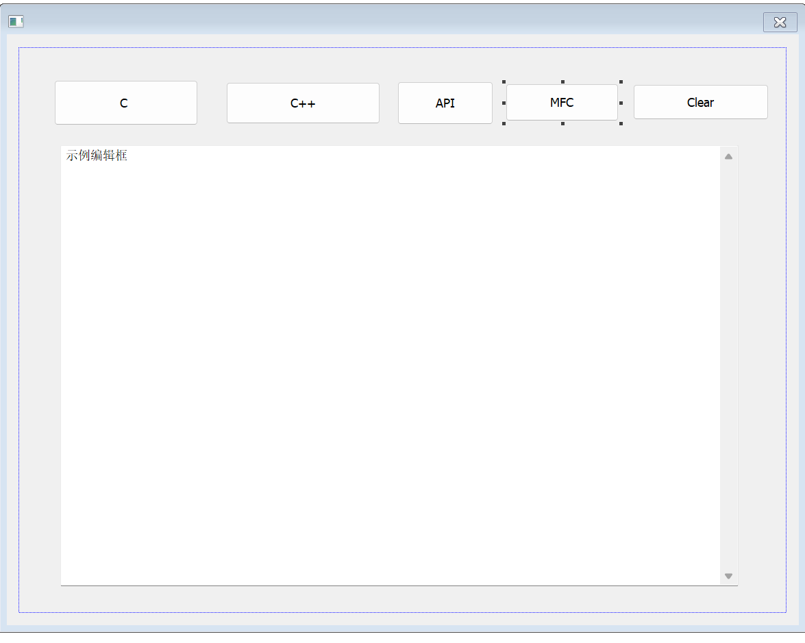

Windows-API-程序设计（7,8）
系统学习Windows API 7
文件操作的四种方法
我们学习到现在，实质上有四种方法进行文件操作。C++, C, Windows API, Windows MFC
合适的选取方法是十分重要的。下面，为了能够更好的演示，我们选择在Windows MFC下演示之。
创建MFC
如果先前并没有勾选过VS桌面开发者，可以前往安装之。这里就不再多述了，创建一个MFC的基于对话框的应用程序即可！
用MFC工具集，我搭建一个演示平台：

其中，事先准备好一个文本（我这里是随意的一个1.txt）放到工程文件目录下面去了。
clear按钮
介绍一下函数：SetDlgItemText
语法
BOOL SetDlgItemTextW(
[in] HWND hDlg,
[in] int nIDDlgItem,
[in] LPCWSTR lpString
);参数
[in] hDlg类型：HWND
包含控件的对话框的句柄。
[in] nIDDlgItem类型： int
具有要设置的标题或文本的控件。
[in] lpString类型： LPCTSTR
要复制到控件的文本。
返回值
类型： BOOL
如果该函数成功，则返回值为非零值。
如果函数失败，则返回值为零。 要获得更多的错误信息，请调用 GetLastError。
注解
SetDlgItemText 函数将WM_SETTEXT消息发送到指定的控件。
而在MFC中，只需要给定指定的控件编号和文本即可：
void CMFCApplication1Dlg::OnBnClickedButton5()
{
// TODO: 在此添加控件通知处理程序代码
SetDlgItemText(IDC_EDIT1, TEXT(""));
}C 方式
点击第一个按钮，书写响应函数：
void CMFCApplication1Dlg::OnBnClickedButton1()
{
// TODO: 在此添加控件通知处理程序代码
CString s = TEXT("************C*************\r\n"); //一个MFC类
FILE* pF; // 声明文件指针
char line[256]; //准备字符空间
fopen_s(&pF,"1.txt", "r"); // 阅读内容
while (fgets(line, 256, pF) != NULL) {
s += line; // 使用Cstring的函数
s += TEXT("\r\n");
}
fclose(pF);
SetDlgItemText(IDC_EDIT1, s);
}C++ 方式
void CMFCApplication1Dlg::OnBnClickedButton2()
{
// TODO: 在此添加控件通知处理程序代码
CString s = TEXT("************C++*************\r\n");
char line[256];
std::ifstream ifs("1.txt");
while (ifs.getline(line, 256)) {
s += line;
s += TEXT("\r\n");
}
ifs.close();
SetDlgItemText(IDC_EDIT1, s);
}Windows API
void CMFCApplication1Dlg::OnBnClickedButton3()
{
// TODO: 在此添加控件通知处理程序代码
CString c = TEXT("*****************API********************\r\n");
CHAR lpFileDataBuffer[4096];
ZeroMemory(lpFileDataBuffer, 4096);
DWORD dwReadSize;
HANDLE hfile;
hfile = CreateFile(
TEXT("1.txt"),
GENERIC_READ,
FILE_SHARE_READ,
NULL,
OPEN_EXISTING,
FILE_ATTRIBUTE_NORMAL,
NULL
);
ReadFile(hfile, lpFileDataBuffer, 4096, &dwReadSize, NULL);
CloseHandle(hfile);
c += lpFileDataBuffer;
SetDlgItemText(IDC_EDIT1,c);
}Windows MFC
void CMFCApplication1Dlg::OnBnClickedButton4()
{
// TODO: 在此添加控件通知处理程序代码
CString s = TEXT("******************MFC*******************\r\n");
CString line;
CStdioFile file(TEXT("1.txt"),CFile::modeRead);
while (file.ReadString(line))
{
s += line;
s += TEXT("\r\n");
}
SetDlgItemText(IDC_EDIT1, s);
}系统学习Windows API 8
前导
首先，熟悉一下这个形式的main函数：
int main(int argc, char* argv[]){
//...
} 在这里，argc指出了命令行有几个，argv给出了具体的参数是什么，来个demo:
#include<Windows.h>
#include<stdio.h>
int main(int argc, char* argv[]) {
printf("个数：%d\n", argc);
printf("第一个:%s\n", argv[0]);
printf("第二个:%s\n", argv[1]);
printf("第三个:%s\n", argv[2]);
} 现在只是生成工程！随后，使用PowerShell切换到工程的debug目录下面，找到这个自己的可执行文件。由于此时int main(int argc, char* argv[])带上了命令行参数，它可以接受命令！
./mu.exe -d a.txt

这就是运行的结果。
DeleteFile
删除现有文件。
若要以事务处理操作的形式执行此操作，请使用 DeleteFileTransacted 函数。
语法
BOOL DeleteFile(
[in] LPCTSTR lpFileName
);参数
[in] lpFileName 要删除的文件的名称。
默认情况下，名称限制为MAX_PATH个字符。 若要将此限制扩展到 32，767 个宽字符，请在路径前面添加“\\？\”。 有关详细信息，请参阅命名文件、路径和命名空间。
从 Windows 10 版本 1607 开始，可以选择删除MAX_PATH限制，而无需在前面添加“\\？\”。 有关详细信息，请参阅 命名文件、路径和命名空间 的“最大路径长度限制”部分。
返回值
如果该函数成功，则返回值为非零值。
如果函数失败，则返回值为零 (0) 。 要获得更多的错误信息，请调用 GetLastError。
注解
如果应用程序尝试删除不存在的文件， DeleteFile 函数将失败并 ERROR_FILE_NOT_FOUND。 如果文件是只读文件，则函数将失败并 ERROR_ACCESS_DENIED。
以下列表标识了删除、删除或关闭文件的一些提示：
- 若要删除只读文件，首先必须删除只读属性。
- 若要删除或重命名文件，必须对文件具有删除权限，或者具有父目录中的删除子权限。
- 若要以递归方式删除目录中的文件，请使用 SHFileOperation 函数。
- 若要删除空目录，请使用 RemoveDirectory 函数。
- 若要关闭打开的文件，请使用 CloseHandle 函数。
如果设置了除 delete 和 delete child 以外的所有访问权限的目录，并且访问控制列表 (ACL) 继承了新文件，则可以创建一个文件，但无法将其删除。 但是，你可以创建一个文件，然后获取在创建文件时返回给你的句柄上请求的所有访问权限。
如果在创建文件时请求删除权限，则可以使用该句柄删除或重命名文件，但不能使用任何其他句柄。 有关详细信息，请参阅 文件安全和访问权限。
如果应用程序尝试删除具有打开正常 I/O 的其他句柄的文件或作为内存映射文件的文件 (FILE_SHARE_DELETE必须在打开其他句柄) 时指定，DeleteFile 函数将失败。
DeleteFile 函数在关闭时标记要删除的文件。 因此，在关闭文件的最后一个句柄之前，不会删除文件。 后续调用 CreateFile 以打开文件失败， 并显示ERROR_ACCESS_DENIED。
符号链接行为 —
如果路径指向符号链接，则删除符号链接，而不是目标。 若要删除目标，必须调用 CreateFile 并指定 FILE_FLAG_DELETE_ON_CLOSE。
CopyFile
将现有文件复制到新文件。
CopyFileEx 函数提供两个附加功能。 每次完成复制操作的一部分时，CopyFileEx 都可以调用指定的回调函数，并且可以在复制操作期间取消 CopyFileEx。
若要以事务处理操作的形式执行此操作，请使用 CopyFileTransacted 函数。
语法
BOOL CopyFile(
[in] LPCTSTR lpExistingFileName,
[in] LPCTSTR lpNewFileName,
[in] BOOL bFailIfExists
);参数
[in] lpExistingFileName 现有文件的名称。
默认情况下，名称限制为MAX_PATH个字符。 若要将此限制扩展到 32，767 个宽字符，请在路径前面添加“\？\”。 有关详细信息，请参阅命名文件、路径和命名空间。
提示
从 Windows 10 版本 1607 开始，可以选择删除MAX_PATH限制，而无需在前面添加“\\？\”。 有关详细信息，请参阅 命名文件、路径和命名空间 的“最大路径长度限制”部分。
如果 lpExistingFileName 不存在， 则 CopyFile 将失败， GetLastError 将返回 ERROR_FILE_NOT_FOUND。
[in] lpNewFileName 新文件的名称。
默认情况下，名称限制为MAX_PATH个字符。 若要将此限制扩展到 32，767 个宽字符，请在路径前面添加“\？\”。 有关详细信息，请参阅命名文件、路径和命名空间。
提示
从 Windows 10 版本 1607 开始，可以选择删除MAX_PATH限制，而无需在前面添加“\\？\”。 有关详细信息，请参阅 命名文件、路径和命名空间 的“最大路径长度限制”部分。
[in] bFailIfExists 如果此参数为 TRUE 并且 lpNewFileName 指定的新文件已存在，则函数将失败。 如果此参数为 FALSE 且新文件已存在，则函数将覆盖现有文件并成功。
返回值
如果该函数成功，则返回值为非零值。
如果函数失败，则返回值为零。 要获得更多的错误信息，请调用 GetLastError。
注解
现有文件 (ATTRIBUTE_SECURITY_INFORMATION) 的安全资源属性将复制到新文件。
Windows 7、Windows Server 2008 R2、Windows Server 2008、Windows Vista、Windows Server 2003 和 Windows XP： 在Windows 8和Windows Server 2012之前，现有文件的安全资源属性不会复制到新文件。
现有文件的文件属性将复制到新文件。 例如，如果现有文件具有 FILE_ATTRIBUTE_READONLY 文件属性，则通过调用 CopyFile 创建的副本也将具有 FILE_ATTRIBUTE_READONLY 文件属性。 有关详细信息，请参阅 检索和更改文件属性。
如果目标文件已存在并且设置了FILE_ATTRIBUTE_HIDDEN或FILE_ATTRIBUTE_READONLY属性，则此函数将失败并ERROR_ACCESS_DENIED。
当 CopyFile 用于复制加密的文件时，它会尝试使用源文件加密中使用的密钥来加密目标文件。 如果无法执行此操作，此函数将尝试使用默认密钥加密目标文件。 如果这两种方法都无法完成， 则 CopyFile 将失败并 显示ERROR_ENCRYPTION_FAILED 错误代码。
符号链接行为 - 如果源文件是符号链接，则复制的实际文件是符号链接的目标。
如果目标文件已存在并且是符号链接，则符号链接的目标将被源文件覆盖。
MoveFile
移动现有文件或目录，包括其子级。
若要指定如何移动文件，请使用 MoveFileEx 或 MoveFileWithProgress 函数。
若要以事务处理操作的形式执行此操作，请使用 MoveFileTransacted 函数。
语法
BOOL MoveFile(
[in] LPCTSTR lpExistingFileName,
[in] LPCTSTR lpNewFileName
);参数
[in] lpExistingFileName 本地计算机上文件或目录的当前名称。
默认情况下，名称限制为MAX_PATH个字符。 若要将此限制扩展到 32，767 个宽字符，请在路径前面添加“\\？\”。 有关详细信息，请参阅命名文件、路径和命名空间。
提示
从 Windows 10 版本 1607 开始，可以选择删除MAX_PATH限制，而无需在前面添加“\\？\”。 有关详细信息，请参阅 命名文件、路径和命名空间 的“最大路径长度限制”部分。
[in] lpNewFileName 文件或目录的新名称。 新名称不得已存在。 新文件可能位于不同的文件系统或驱动器上。 新目录必须位于同一驱动器上。
默认情况下，名称限制为MAX_PATH个字符。 若要将此限制扩展到 32，767 个宽字符，请在路径前面添加“\\？\”。 有关详细信息，请参阅命名文件、路径和命名空间。
提示
从 Windows 10 版本 1607 开始，可以选择删除MAX_PATH限制，而无需在前面添加“\\？\”。 有关详细信息，请参阅 命名文件、路径和命名空间 的“最大路径长度限制”部分。
返回值
如果该函数成功，则返回值为非零值。
如果函数失败，则返回值为零。 要获得更多的错误信息，请调用 GetLastError。
注解
MoveFile 函数将移动 (重命名) 文件或目录 (包括其子级) 在同一目录中或跨目录。 需要注意的是，当目标位于其他卷上时，移动目录时 ，MoveFile 函数将失败。
如果文件跨卷移动， MoveFile 不会随文件一起移动安全描述符。 将为文件分配目标目录中的默认安全描述符。
MoveFile 函数将其操作与链接跟踪服务协调，因此可以在移动链接源时对其进行跟踪。